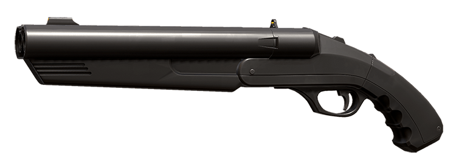
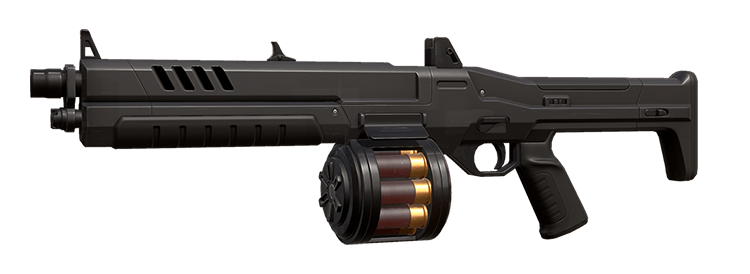
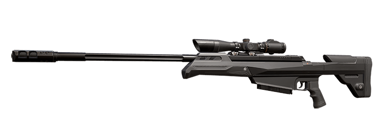

CHOOSE YOUR
WEAPON
WEAPON

CLASSIC.
Lightweight and versatile, the default for a reason.

SHORTY.
Surprise your enemy up close for maximum effectiveness.

FRENZY.
Up close, hold the trigger.
From afar... try something else.
From afar... try something else.

GHOST.
Sleek, silenced, and proficient at any range.

SHERIFF.
A modern six-shooter for the crackshot headseeker.

STINGER.
Spray and pray up close, or land composed bursts. The Stinger is ferocious either way.

SPECTRE.
When in doubt, the Spectre is your number one pick.

BUCKY.
Attacker. Defender.
Doesn't matter, you're the one with the pump-action shotgun.
Doesn't matter, you're the one with the pump-action shotgun.

JUDGE.
Automatic, rapid fire shotgun that provides high sustained damage.

BULLDOG.
Trusty bursts or adaptable recoil. Pick your poison.
For your enemies, of course.
For your enemies, of course.

GUARDIAN.
Shines in the hands of a patient shooter.

PHANTOM.
A balanced weapon built for stable, extended sprays.

VANDAL.
An accurate powerhouse that excels in short bursts.

MARSHAL.
See a head, shoot a head.
Simple yet effective.
Simple yet effective.

OPERATOR.
Hit-or-miss, and life-or-death.
Aim true and make no blunder.
Aim true and make no blunder.

ARES.
It's torrent of lead only gets more accurate the longer it fires.

ODIN.
Mow them down with this overwhelming juggernaut of mechanical engineering.

TACTICAL KNIFE.
The last resort, or the declaration of superiority. Victim humiliation guaranteed nonetheless.